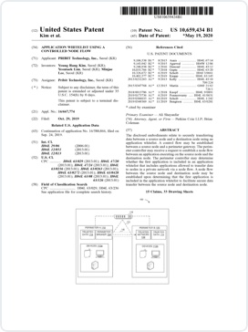
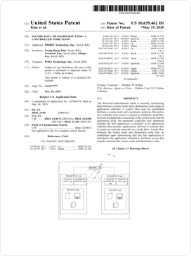

Technology
세계 최초, 국내 최다 SDP 및 제로트러스트 기술 IPR 보유 PRIBIT만의 혁신적인 애플리케이션 접속 제어 기술을 만나보십시오.
Network Security Paradigm
- 기술이 발전할수록 통신 및 접속 대상은 점점 작아지고 있음.
-
- 1st Wave TCP/IP Firewall, UTM
(Network Level) - 2nd Wave Tunneling IPSec, SSL VPN
(Device Level) - 2.5th Wave Tunneling + IP SDP
(Network + Device Level) - What is 3rd Wave
- 1st Wave TCP/IP Firewall, UTM
- 비지니스 전환 필요 시점
-
- 포화 시장 (지각 수용 단계)
- 신규 시장 (선각 수용 단계)
Redefine the Micro Segment
New Wave
-
- 불특정
단말로부터
공격 가능 - 1st Wave TCP/IP Firewall, UTM
(Network Level)
- 불특정
-
- 불특정
애플리케이션으로부터
공격 가능 - 2nd Wave Tunneling IPSec, SSL VPN
(Device Level) - 2.5th Wave Tunneling + IP SDP
(Network + Device Level)
- 불특정
-
- 비인가 비정상
애플리케이션 접속
원천 차단 - 3rd Wave 어플리케이션
접속 제어 기술 SDP + α
(Network + Device + Application)
- 비인가 비정상
New Standard
- Turn Off Network, Identify Risks
- 단말의 네트워크 접속을 차단할 수 있습니다.
- 사용자의 네트워크 접속을 차단할 수 있습니다.
- 애플리케이션의 네트워크 접속을 차단할 수 있습니다.
- 위험이 발견되면 네트워크 접속을 차단할 수 있습니다.
IPR (Intellectual Property Resources)
- 국내 특허 : 총 14건 출원 및 8건 등록
- 미국 특허 : 총 5건 출원 및 2건 등록
- 국제우선권 (PCT) : 총 7건 출원 (미국, 일본, 유럽)
-  Application whitelist using a controlled node flow
-  Secure data transmission using a controlled node flow
- 터널에 기반하여 단말의 네트워크 접속을 제어하기 위한 시스템 및 그에 관한 방법
- 네트워크 접속 제어 시스템 및 그 방법
- 네트워크 접속 제어 시스템 및 그 방법
- 단말의 안전한 네트워크 접속을 위한 시스템 및 방법
- 보안 애플리케이션을 통해 안전한 데이터를 전송하기 위한 시스템 및 그에 관한 방법
- 터널 기반 접속성 관리 방법 및 그를 위한 장치 및 시스템
- 데이터 플로우 제어 기반 데이터 전송 시스템 및 방법
- 컨트롤러 기반 데이터 전송 시스템 및 방법
- 컨트롤러 기반 데이터 전송 시스템 및 방법
- 컨트롤러 기반 데이터 전송 시스템 및 방법
Technology Maturity
-
1st Wave Network Level
- TCP/IP
-
2nd Wave Device Level (現 시장 눈높이)
- On Demand Tunneling + Network (SDP)
- Tunneling
-
3rd Wave Application Level (PCxF)
- 10년 이상 사용할 수 있는 기술 및 IPR 확보 완료
- 기술 개발까지 3년 소요 + α
- 2030 + α
- Flow Routing (Data Packet Control)
- Application Authentication
- TCP Session Control
- On Demand Tunneling + Application + Network